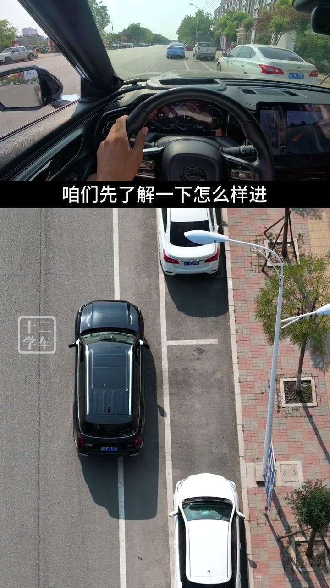
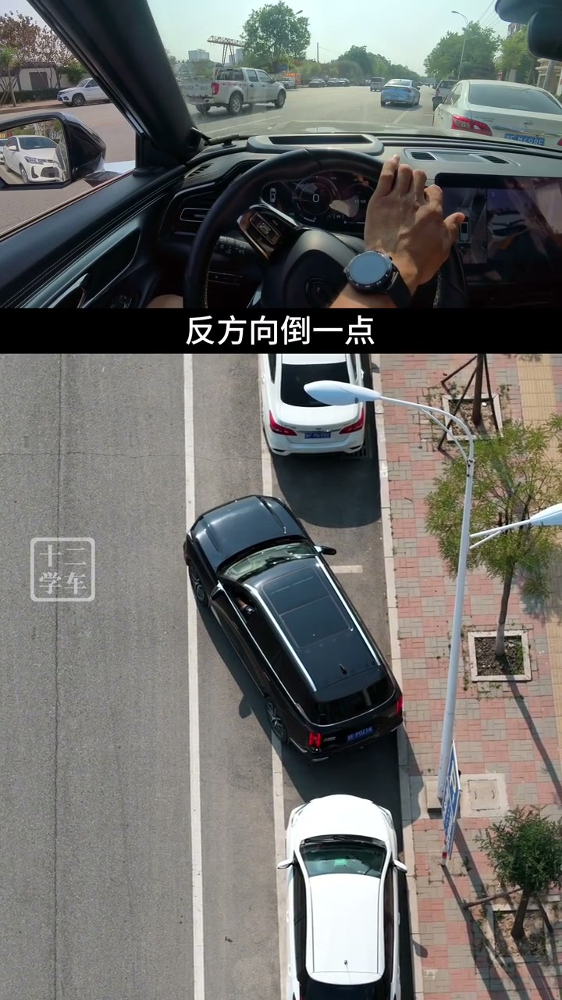

01
中文
侧方停车进不去，无非就两种情况。
EN
A failed parallel park comes down to two cases.
表达提示two cases（两种情况）

Scene English · 驾驶 · 侧方停车
How to Fix a Parallel Park That Won't Fit
🎧 语音讲解
The Two Failure Modes
情境侧方停车进不去无非两种情况：角度大了车身偏离车头被卡住，或角度小了车身偏外后轮进不去。
侧方停车进不去，无非就两种情况。
A failed parallel park comes down to two cases.
表达提示two cases（两种情况）
第一种，角度大了，车身偏离，车头被卡住。
First: too sharp an angle—the nose is stuck.
表达提示stuck nose（车头卡住）
第二种，角度小了，车身偏外，后轮进不去。
Second: too shallow an angle—the rear wheel won't enter.
表达提示rear wheel（后轮）
two cases（两种情况
stuck nose（车头卡住

The Right Way to Enter
情境先贴近白车观察后视镜，让车尾朝着库位的后半部分去倒，后轮送到位，前面有空间就等于进空了。
讲之前先了解一下怎么样进最简单：靠近白车，观察后视镜。
First, the simplest entry: pull close to the white car and watch the mirror.
表达提示side mirror（后视镜）
让你的车尾朝着库位的后半部分去倒车。
Aim your tail at the back half of the spot.
表达提示back half（后半部分）
后轮送到位，前面有空间，就等于进空了。
Seat the rear wheel and space up front means you're in.
表达提示seat the wheel（后轮到位）
side mirror（后视镜
back half（后半部分

Too Sharp: Fix It by Swing-Out
情境角度大了车身偏底、车头被卡住时，把车开出去做一次甩尾：往前开后轮过障碍点再往里打方向，车尾就往外甩。
倒进来后发现角度大了，车头被卡住了。
Came in too sharp and the nose is stuck.
表达提示too sharp（角度大）
我们只需要把车开出去，进行一下甩尾就可以了。
Just drive out and do a swing-out.
表达提示swing-out（甩尾）
往前开，后轮过了障碍点之后往里打方向，车尾的角度就往外甩了。
Drive forward, turn past the obstacle, and the tail swings out.
表达提示swings out（往外甩）
之后朝着库尾的后半部分去倒，把后轮先送到位。
Then reverse toward the back half and seat the rear wheel.
表达提示back half（后半部分）
too sharp（角度大
swing-out（甩尾

Too Shallow: Turn Out to Fix It
情境车身偏外时往外打方向往前走，车尾就甩过来了，然后再倒进去。
倒进来后发现车身偏外。
Came in too shallow and the body sits out.
表达提示too shallow（角度小）
让车尾对着库尾的后半部分，肯定是往外打方向。
To aim the tail at the back half, steer outward.
表达提示steer outward（往外打）
往前走，往外打方向，车尾不就甩过来了吗。
Drive forward, steer out, and the tail swings across.
表达提示swings across（甩过来）
之后还是同样的操作：倒进去，把后轮送到位。
Then repeat: reverse in and seat the rear wheel.
表达提示seat（送到位）
too shallow（角度小
steer outward（往外打

It's About the Adjustment Logic
情境这些操作不要死记，理解不了就多看几遍，主要是把调整的思路搞清楚。
这些东西不要去死记。
Don't memorize these by rote.
表达提示by rote（死记）
理解不了就多看几遍。
If you can't follow, rewatch it.
表达提示rewatch（再看一遍）
主要是把调整的思路搞清楚。
The point is to nail the adjustment logic.
表达提示adjustment logic（调整思路）
by rote（死记
rewatch（再看一遍
说两种失败
说正确进库
说角度大调整
说角度小调整
说调整核心
甩尾一次就能进。
别死记硬背。
车尾对库尾后半部。
调角不扰后轮。
偏外就外打方向。